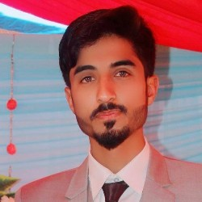

Emergence in generative AI
Doctoral work on why and how qualitatively new behaviours arise in large-scale generative models.

I study how new capabilities emerge in large generative models, and how quantum and classical methods can make machine learning more robust, especially for medical diagnosis.
Marie Skłodowska-Curie Doctoral Researcher, FINALITY Doctoral Network
PhD in Computational Sciences, The Cyprus Institute, Nicosia
The background is a small simulation: each point follows only its neighbours, yet coherent currents appear. Move your cursor through it.
I am a doctoral researcher in Computational Sciences at The Cyprus Institute, funded through the FINALITY Marie Skłodowska-Curie Doctoral Network. My PhD investigates emergent phenomena in generative AI: the mechanisms, behaviours and capabilities that appear only once models reach large scale.
Before Cyprus, I spent several years teaching computing in Pakistan, most recently as a Lecturer at FAST–NUCES Islamabad and a Lab Engineer at NUST. My master's research in Data Science (CGPA 3.97/4.0) built a quantum-classical hybrid framework for robust medical diagnostics using MCMC-parameterised QUBO optimisation.
I started out as a software developer building web interfaces, and I still enjoy turning research into tools and datasets other people can use.
Doctoral work on why and how qualitatively new behaviours arise in large-scale generative models.
Hybrid quantum-classical classifiers and QUBO formulations for model compression and diagnosis.
Detecting AI-generated imagery, plant disease recognition and medical image analysis.
Trustworthy classification under sparse data, extreme scarcity and distribution shift.
A public benchmark I curated with one collaborator, pairing AI-generated and real photographs across 192 scene categories. It supports work on AI-generated image detection, scene classification and image authenticity, and ships with documentation and metadata for reproducible comparison.
View the dataset on KaggleA facial emotion recognition system combining landmark detection, Sobel edges and a convolutional neural network, used to recommend music that matches a listener's mood. This grew out of my undergraduate thesis.
No publications match that search. Try a shorter word, or choose All.
Full record on ORCID, or download the publication list (PDF).
Sep 2026 – present
FINALITY MSCA Doctoral Network, The Cyprus Institute, Nicosia
Doctoral research on emergent phenomena in generative AI models and the mechanisms behind them.
Jul 2026 – Sep 2026
FAST–NUCES, Islamabad
Taught undergraduate computing courses and carried out research in quantum computing, quantum machine learning and AI.
Jul 2025 – Jul 2026
National University of Sciences & Technology (NUST)
Ran hands-on demonstrations and practical exercises to build students' problem-solving skills.
Jul 2023 – Jul 2025
FAST–NUCES, Peshawar Campus
Taught programming in Python, C++ and C, along with algorithms and data structures.
Jan 2023 – Jun 2023
Ghulam Ishaq Khan Institute of Engineering Sciences and Technology
Held help-lab hours and one-to-one consultations on assignments and lab work.
Oct 2021 – Jan 2023
Cadet College Sohawa (Pakistan Sweet Home)
Delivered lectures and labs in C and C++ programming.
Oct 2020 – Sep 2021
Army Public School, Defence Complex, Islamabad
Taught computing fundamentals and good practice in everyday computer use.
Aug 2018 – Jun 2020
Unico Technologies, Attock
Built website layouts and interfaces in HTML and CSS and integrated data from back-end services and databases.
2026 – present
The Cyprus Institute, Nicosia
Emergent phenomena in generative AI models.
2022 – 2025
FAST–NUCES, Pakistan
CGPA 3.97 / 4.0
Thesis: A quantum-classical hybrid framework for robust medical diagnostics via MCMC-parameterised QUBO optimisation.
2015 – 2019
COMSATS University Islamabad, Attock Campus
CGPA 3.8 / 4.0, campus gold medal
Thesis: Identification of rhythmic sound patterns by emotion recognition using landmark and Euclidean distance techniques.
HSSC, Pre-Engineering, APSACS Attock Cantt, 2013–2015, grade A
SSC, Science, Noble Grammar Public Secondary School, Attock, 2011–2013, grade A+
I'm open to research collaborations, talks and conversations about generative AI and quantum machine learning.